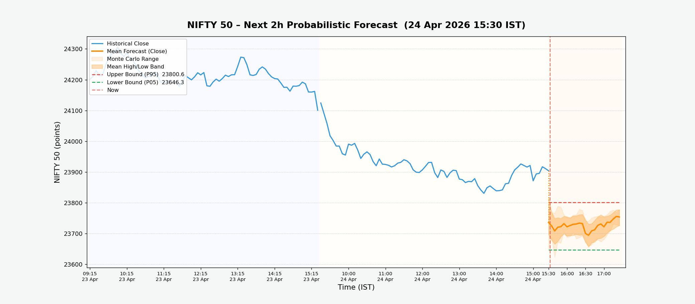

Bullish Bar Ratio
59.6%
Next 2h · close > open %
Upper Bound
23800.6
Max predicted high
Lower Bound
23646.3
Min predicted low
Predicted Range
154.3 pts
Upper − Lower spread
2h Probabilistic Price Forecast
Monte Carlo · 10 paths · 5-min candles

How it works
- Context: Last 512 five-minute bars (~42 h of trading) fetched live from OpenAlgo.
- Model: AI predictor fine-tuned on NIFTY 50 5-min candlestick data.
- Horizon: 24 × 5-min bars = 2h of predicted OHLC candles.
- Uncertainty: 10 independent Monte Carlo runs produce the shaded forecast bands.